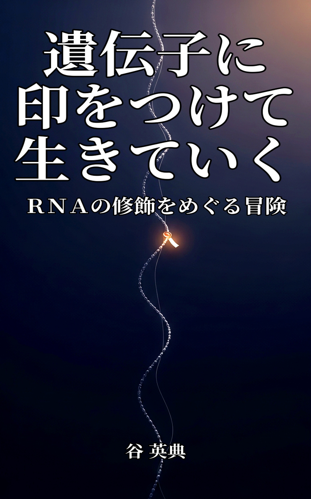
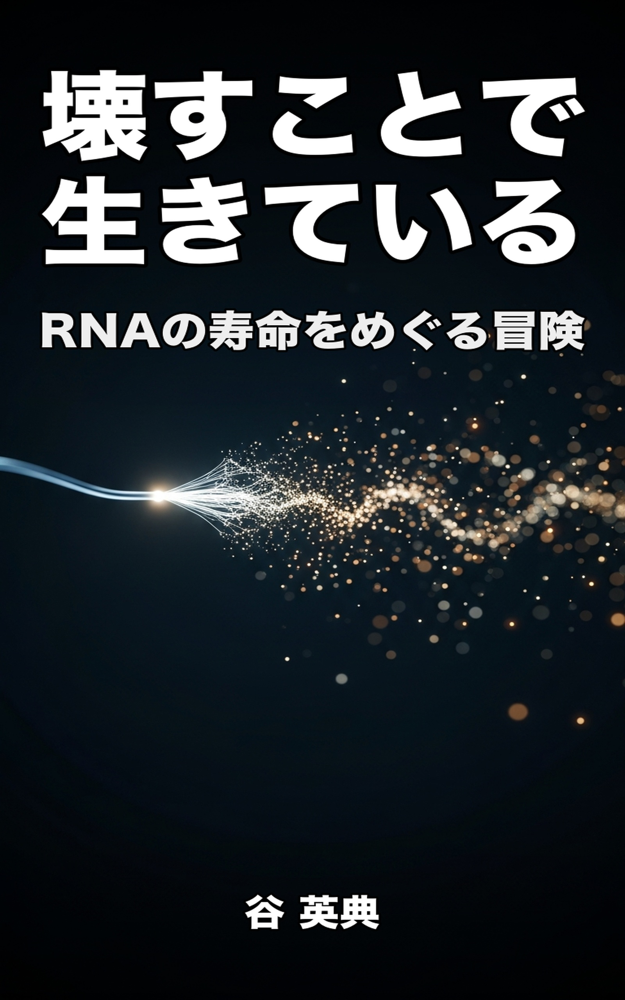
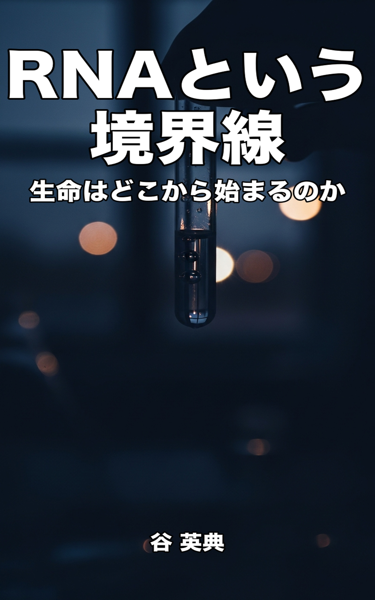
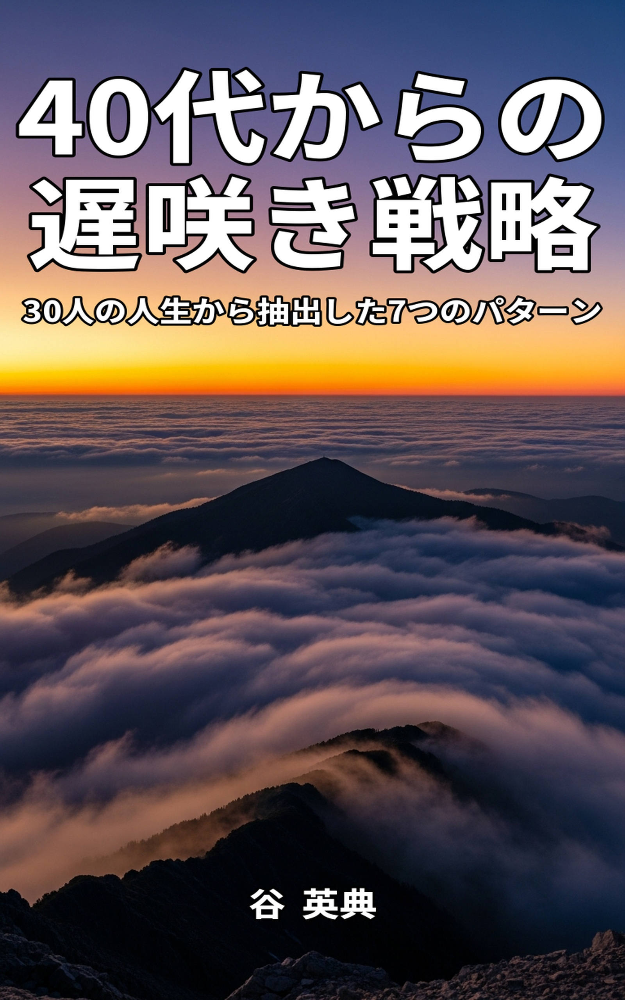
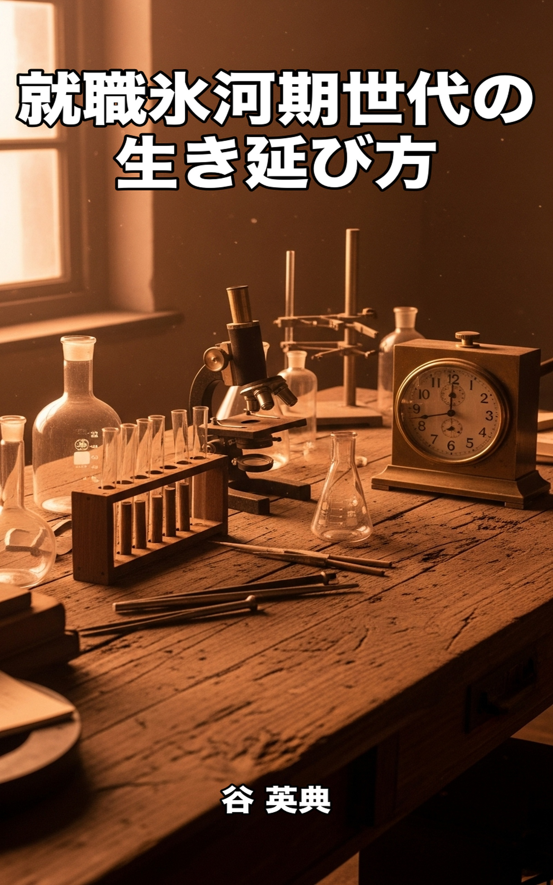
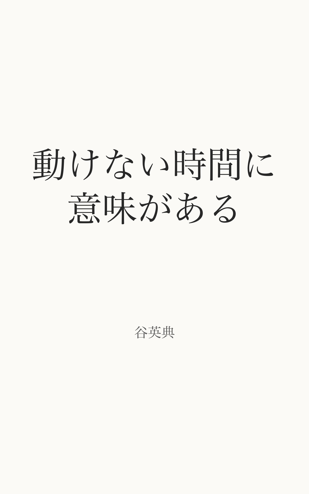
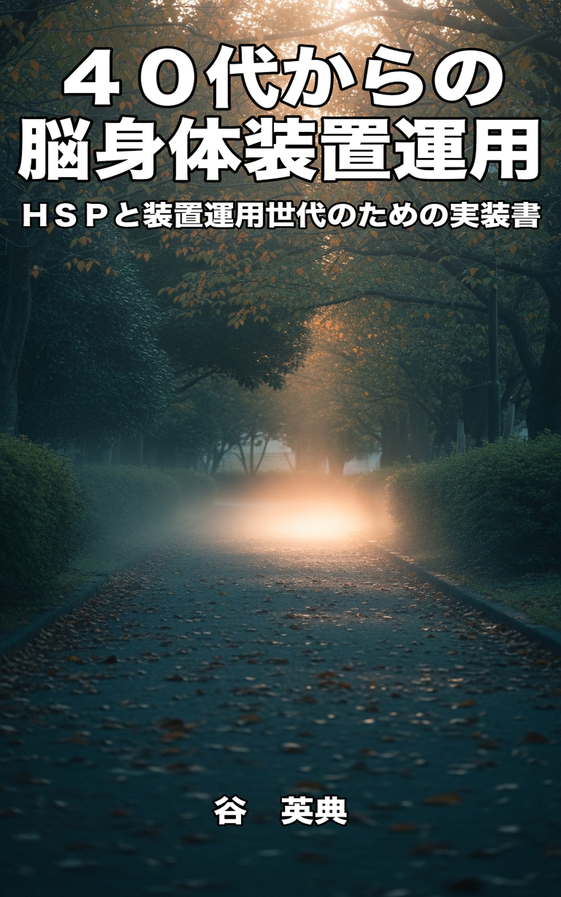
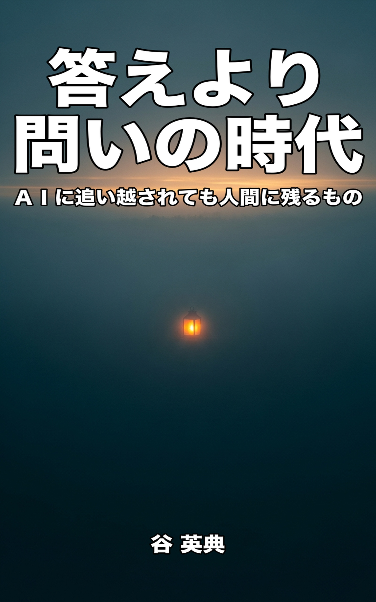
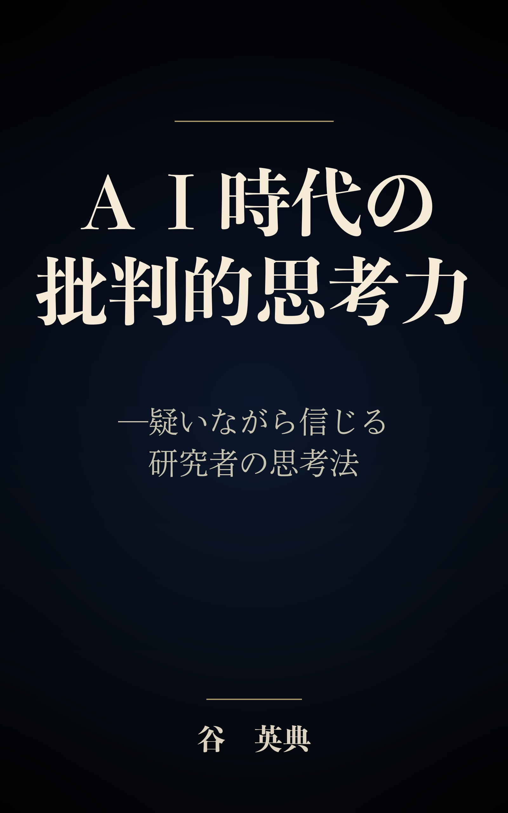

 SERIES 02 ＲＮＡ三部作（科学エッセイ） 生命の起源・寿命・修飾を物語る、研究者によるＲＮＡ三部作。一般読者に向けたサイエンス・ナラティブ。 全3冊
 SERIES 03 装置運用世代シリーズ — 思想・メモワール 「意志ではなく装置で生きる」というシリーズの核となる思想と、内的支柱を描いた中核作。 全3冊
 SERIES 05 装置運用世代シリーズ — HSP・繊細思考者向け HSP気質と中年期の身体・脳疲労を装置で乗り切るための、神経科学ベースの実装書。 全5冊（新着3冊を表示）
 SERIES 08 AI時代の教養シリーズ 生成AIに使われる側から使いこなす側へ。批判的思考・情報リテラシー・科学の眼で、AI時代を主体的に生きるための教養書。 全3冊